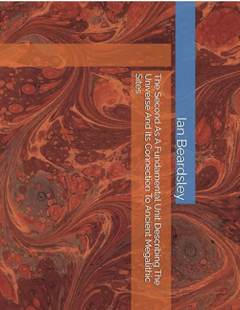

Contact
Contact
Contact: eanbardsley@gmail.com
Click Here To Buy A Concise Presentation Of A Theory Bridging Planetary And Atomic Scales
It is found the planetary system, our Solar System, and atomic systems, can be described in terms of the same characteristic time. That time turns out to be 1 second, which happens to be the fundamental unit we use to measure time. That system comes from the ancient Sumerians using base 12 and base 60 counting, ultimately, but in light of its appearance in natural structures in our theory with such recurrence, it would seem it is not an arbitrary unit, but has natural significance. This theory, involving a wave equation solution to the Solar System provides another way to model the formation of star systems other than using standard celestial mechanics. Here we model with a computer program, after presenting the theory in Part 1, star systems from spectral types F5V (blue stars) through G type stars like our Sun (yellow stars), to K3V stars (orange stars). It is suggested that the same characteristic time of one second that describes planetary and atomic systems describes hydrocarbons, the chemical skeletons of life chemistry, connecting our physical theory to biological theory. At the end of the paper the Moon eclipsing the Sun is treated over geologic time.
****************************************************************************************
Click Here To Buy Life As A Natural Property of the Universe in linen wrap hardcover